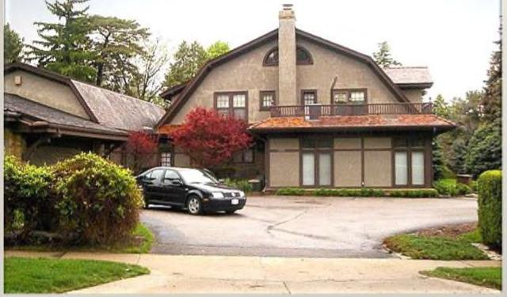

Ông không làm mất uy tín kinh doanh của mình. Ông không gắn mình vào một chiến lược, một thế giới quan hay một xuhướng đang trôi qua. Ông không tiêu xài hoang phí, nghỉ việc hay nghỉ hưu. Ngôi nhà giản dị và chiếc xe “cà tàng của Warrant Buffet Ông đã sống sót. Sự sống còn cho ông tuổi thọ. Và tuổi thọ - đầu tư liên tục từ 10 tuổi đến ít nhất 89 tuổi - là điều đã làm nên điều kỳ diệu từ lãi kép. Đó là điều quan trọng nhất khi mô tả thành công của ông. Để cho bạn hiểu ý tôi, bạn phải nghe câu chuyện về Rick Guerin. Bạn có thể đã nghe nói về bộ đôi đầu tư Warren Buffett và Charlie Munger. Nhưng 40 năm trước có một thành viên thứ ba của nhóm, Rick Guerin. Warren, Charlie và Rick đã cùng nhau đầu tư và cùng nhau phỏng vấn các nhà quản lý doanh nghiệp. Sau đó, Rick biến mất, ít nhất là liên quan đến thành công của Buffett và Munger. Nhà đầu tư Mohnish Pabrai từng hỏi Buffett chuyện gì đã xảy ra với Rick. Mohnish nhớ lại: {Warren nói] “Charlie và tôi luôn biết chúng tôi sẽ trở nên vô cùng giàu có. Chúng tôi không vội trở nên giàu có; chúng tôi biết nó sẽ xảy ra. Rick cũng thông minh như chúng tôi, nhưng anh ấy rất vội vàng”. Điều đã xảy ra là trong thời kỳ suy thoái 1973-1974, Rick vay ký quỹ (vay để mua cổ phiếu). Và thị trường chứng khoán đã giảm gần 70% trong hai năm đó, vì vậy ông ấy đã nhận được các cuộc gọi ký quỹ. Ông ấy đã bán cổ phiếu Berkshire của mình cho Warren —— Warren thực sự đã nói “Tôi đã mua cổ phiếu Berkshire của Rick” - với giá dưới 40 đô la một cổ phiếu. Rick buộc phải bán vì ông vay quá nhiều. Charlie, Warren và Rick đều có kỹ năng kiếm tiền như nhau. Nhưng Warren và (harlie đã có thêm kỹ năng để giữ tiền mà theo thời gian, là kỹ năng quan trọng nhất.
